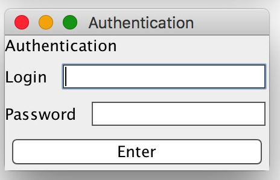
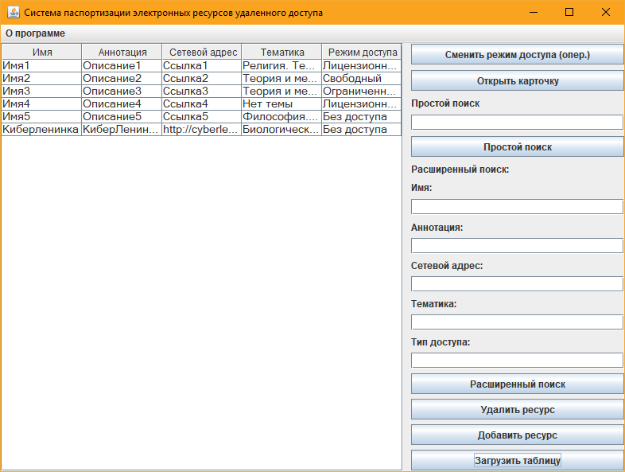
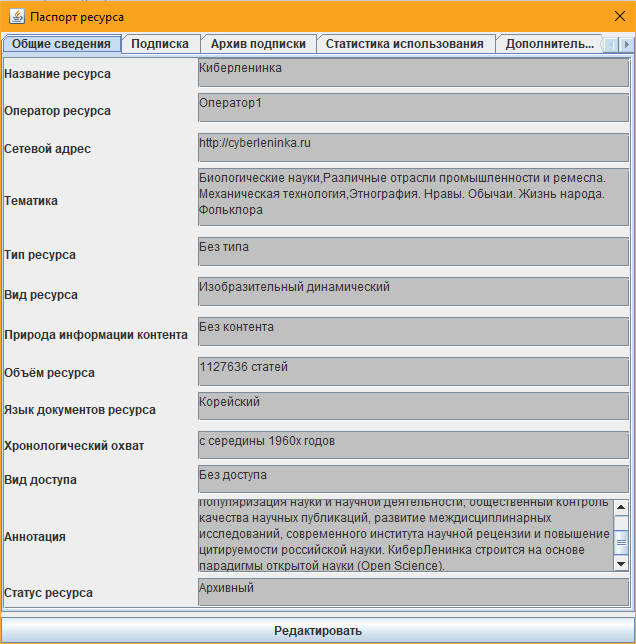

Настоящий документ является руководством пользователя по эксплуатации программы паспортизации электронных ресурсов удаленного доступа.
Программа предназначена для применения в библиотеках, а также для частного пользования с целью сбора и актуализации информации об электронных ресурсах удаленного доступа.
Основными возможностями являются:
Все пользователи программного продукта должны иметь навыки работы с операционными системами семейства Microsoft Windows, Linux или MacOS.
Должна быть установлена Java Virtual Machine версии 8. Операционная система - Microsoft Windows XP и выше, Slackware Linux 12.0 и выше или Mac OS 10.4 Tiger и выше.
Процессор - Pentium 4.
Оперативная память - 1Гб.
Доступное место на диске - 1Гб.
Дополнительное оборудование - Монитор SVGA 1024x768, мышь, клавиатура.
В системе возможны два типа пользователей: администратор и пользователь. пользователь имеет возможность добавлять паспорта электронных ресурсов в базу, редактировать и удалять их, осуществлять простой и расширенный поиск паспортов электронных ресурсов, а также сортировку списка ресурсов по нескольким полям. Администратор имеет дополнительные права: он может изменять словари, удалять записи из архива. Смена пользователя производится в отдельном окне.

Список ресурсов подгружается только при нажатии кнопки "Загрузить таблицу". Программа позволяет добавлять новую информацию об электронных ресурсах, редактировать информацию об уже имеющихся, и удалять ненужную информацию. Информация об электронных ресурсах выводится в виде списка на главном экране программы. Список можно сортировать по любым полям, отображаемым в окне программы, просто кликнув по заглавию. Есть возможность осуществлять простой и расширенный поиск.

В карточке отображается полная информация об электронном ресурсе. В ней доступны функции изменения информации об электронном ресурсе, просмотра архивных записей ресурса. Для изменения информации о ресурсе необходимо нажать на кнопку “Редактировать”. При этом поля карточки станут доступны для редактирования. В каждой вкладке есть разные поля: как словарные, так и для ввода строковых значений. После внесения необходимых изменений необходимо нажать на кнопку “Сохранить”, тогда измененный паспорт электронного ресурса сохранится в базе данных. Если внесение изменений нужно отменить, необходимо нажать на кнопку “Отмена”, при этом состояние полей карточки вернется к первоначальному.

Описываемая программа является программным модулем, установка и настройка которого осуществляется администратором системы.
Возможны следующие аварийные ситуации:
Для успешной работы с системой рекомендуется:
- получить навыки работы с используемой операционной системой (Windows/Linux/Mac OS);
- ознакомиться с данным руководством.